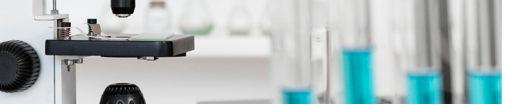

Роль BRAF-мутации в развитии меланомы
Чтобы понять, что такое BRAF-мутация, надо разобраться, что такое ген. Гены играют роль «кода» в построении белков. Белки регулируют процесс образования клеток.
При определенных условиях могут произойти изменения в генах, которые называются мутациями. При возникновении мутации нормальная работа белков нарушается и клетки начинают функционировать неправильно.
Все это может привести к появлению новообразований
и других опасных заболеваний.
- BRAF (произносится как «БРАФ») — это белок, который является частью большого сигнального пути, который называется МАРК (произносится как «МАПКЕЙ»), и в нормальных клетках действует как «переключатель».
- Когда это необходимо, он включается под действием специальных сигналов и активирует другие белки, помогающие регулировать деление и рост клеток.
- При некоторых видах злокачественных новообразований, включая меланому, возможны изменения гена BRAF, т.е. мутации. Когда в клетках меланомы есть мутация BRAF, этот белок-«переключатель» все время «включен», что способствует неконтролируемому росту клеток.
- Таким образом, мутация в гене BRAF приводит к более быстрому и неправильному делению опухолевых клеток и, как следствие, к более агрессивному течению заболевания.
Мутация BRAF V600 определяется более чем у 50% пациентов с меланомой кожи
Меланому с мутацией BRAF называют BRAF-положительной. При отсутствии мутации в гене BRAF опухоль называют BRAF-отрицательной или меланомой «дикого типа». Очень важно при лечении меланомы провести диагностику на наличие мутации BRAF, так как существуют препараты, которые точечно воздействуют на конкретный вид мутации.